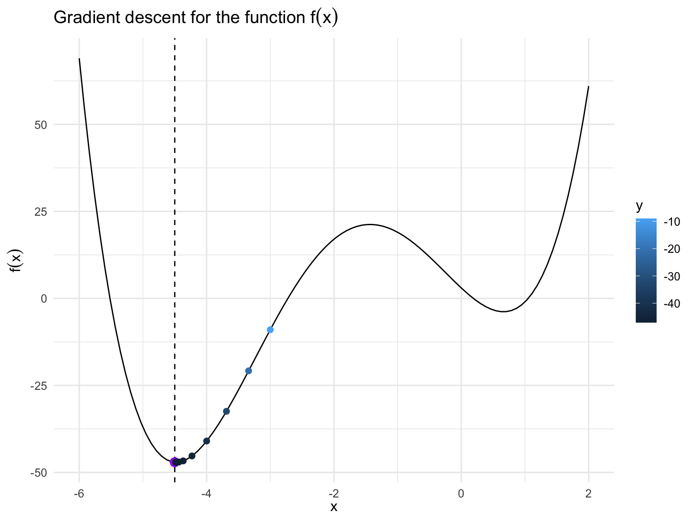
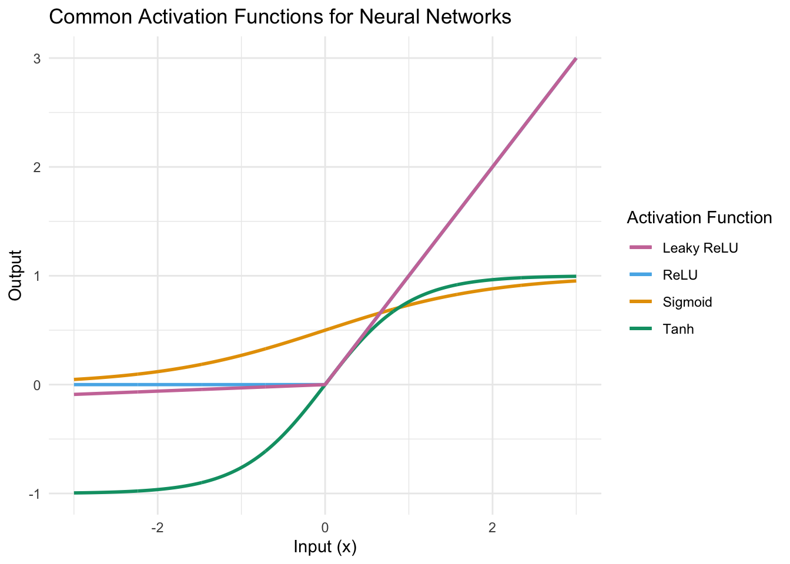

Lesson 7
Neural Networks and Deep Learning
Learning Objectives
After this lesson, students will be able to:
Describe the structure of a neural network and explain the role of activation functions, loss functions, optimization algorithms, and regularization in neural networks and deep learning.
Implement the gradient descent algorithm for optimization of simple functions.
Implement a neural network in R using packages such as
brulee,kerasortorch.
Readings, etc.
For this lesson, refer to the following readings, etc.:
Read chapter 10 from of An Introduction to Statistical Learning (Tibshirani, James, and Trevor 2017).
Read section 7.1 from Mathematics for Machine Learning (Deisenroth, Faisal, and Ong 2020). This book is freely available online. View the book.
Watch the following video lectures on neural networks:
Overview
Deep learning is an active area of research in machine learning and artificial intelligence and neural networks are the foundation of deep learning. In this lesson, we will introduce neural networks and discuss how they are used in deep learning.
Neural networks are a class of machine learning models that are inspired by the structure of the brain. They are composed of a series of layers of neurons that are connected to each other. Each artificial neuron is a simple computational unit that takes in a set of inputs, performs a computation, and produces an output. The output of one neuron is then used as the input to the next neuron. The first layer of artificial neurons is called the input layer and the last layer of neurons is called the output layer. The layers in between the input and output layers are called hidden layers. The number of hidden layers in a neural network is called the depth of the network. The number of neurons in each layer is called the width of the network. Figure 1 shows a neural network with one hidden layer consisting of 4 neurons or nodes. Later we will develop notation to describe neural networks mathematically. From here on out we will ignore the biological analogy that is the historical origin of neural networks and focus on the mathematical model.

Neural networks are conceptually simple but the mathematical details can be confusing. The general idea is that a neural network takes an input of \(p\) predictor variables \(X = (X_{1},X_{2},\ldots , X_{p})\) and builds a nonlinear function \(f(X)\) to predict the response \(Y\). What distinguishes neural networks for other nonlinear methods is the particular structure of the model function \(f\).
Exploring a Neural Network Interactively
In order to develop some intuition, we will start by exploring an interactive visualization of a neural network via the Neural Network Playground website. Visit the Neural Network Playground.
The visualization allows you to create a neural network and then train it on a dataset. The dataset can be a classification problem or a regression problem. The visualization allows you to change the activation function, the number of hidden layers, the number of neurons in each layer, and the learning rate. These are components related to the training of a network that we will define in detail later.
Exploring Neural Networks in R
Let’s also take a look at a simple neural network in R. The brulee package provides a simple interface via a function brulee_mlp() (it’s a good idea to skim the brulee_mlp documentation) for creating neural networks in R and uses the tidymodels framework for modeling. The code, available via this GitHub repo, creates a neural network with one hidden layer and trains it on the penguins dataset. The repository also contains a script with an example of tuning a neural network with a single hidden layer. Let’s examine this together in an RStudio project.
Suggestions for Further Reading
Here are some additional resources on neural networks and deep learning that cover various aspects of the field that we do not have time to go over in this course:
For historical context, see Thinking Machines: The Quest for Artificial Intelligence–and Where It’s Taking Us Next by Dormehl or Deep Learning by Kelleher.
For an excellent overview of the types of problems that neural networks and deep learning are well-suited for, see (Krohn, Beyleveld, and Bassens 2019).
For a more detailed introduction to neural networks, see (Goodfellow, Bengio, and Courville 2016). This book is accessible online, view the book.
Neural Networks
A neural network is a nonlinear function that is described by parameters called weights and bias. Each node or neuron in a layer of the network inputs a linear combination of the outputs from the nodes of the previous layer. The weights and bias parameters specify the linear combination which is passed through an activation function to produce the output of the node. The activation function is a nonlinear function, its output defines the output of the node. Later, we will define some typical activation functions.
The output of each node is then used as the input to the nodes of the next layer. The output of the last layer is the output of the neural network. The weights and bias parameters are learned during the training process. The training process involves finding the weights and bias parameters that minimize a loss function. The loss function is a measure of how well the neural network is performing on the training data. The goal of training a neural network is to find the weights and bias parameters that minimize the loss function.
As with all of the other machine learning algorithms we have covered so far, deep learning requires us to solve some kind of optimization problem. In the case of neural networks, we seek to find the weights and bias parameters that minimize the loss function. For regression problems, the loss function is typically the mean squared error (MSE). For classification problems, the loss function is typically the cross-entropy loss.
The weights and bias parameters are learned using an algorithm called gradient descent. Gradient descent is an optimization algorithm that is used to find the minimum of a function. In the context of neural networks, we use gradient descent to find the minimum of the loss function. The loss function is a function of the weights and biases of the neural network. The weights and biases are the parameters of the neural network. The loss function is a measure of how well the neural network is performing on the training data. The goal of training a neural network is to find the weights and bias parameters that minimize the loss function.
Stochastic gradient descent (SGD) is a variant of gradient descent that is used to train neural networks. It can be regarded as a stochastic approximation of gradient descent optimization, since it replaces the actual gradient (calculated from the entire data set) by an estimate thereof (calculated from a randomly selected subset of the data). Especially in high-dimensional optimization problems this reduces the very high computational burden, achieving faster iterations in exchange for a lower convergence rate.
Gradient descent and SGD require us to compute the gradient (multi-variable derivative) of the loss function with respect to the weights and bias parameters. The activation function at each node of the network results in a nonlinear function of the parameters we want to optimize. Thus, computing the implementation of gradient descent for neural networks forces us to use the chain rule for derivatives and this becomes a very messy calculation.
A major development in the field of neural networks was the introduction of the backpropagation algorithm by Rumelhart, Hinton, and Williams in 1986. The backpropagation algorithm is an algorithm for training neural networks. This algorithm is used to calculate the gradient of the loss function with respect to the weights and bias parameters. The gradient is then used to update the weights and bias parameters via gradient descent or something similar. The backpropagation algorithm is clever use of the chain rule for derivatives.
We will proceed by getting a feel for gradient descent in the context of functions that are a lot simpler than neural networks.
Gradient Descent for Optimization
Gradient descent is an iterative optimization algorithm for finding the minimum of a function \(f:\mathbb{R}^{d} \rightarrow \mathbb{R}\). The algorithm starts with an initial guess \({\bf x}_{0} \in \mathbb{R}^{d}\) for the minimizing value for the function. The algorithm then iteratively updates the guess by an iteration of the form
\[ {\bf x}_{k+1} = {\bf x}_{k} - \alpha_{k} \nabla f({\bf x}_{k}) \]
where \(\alpha_{k} > 0\) is the step size and \(\nabla f({\bf x}_{k})\) is the gradient of the function \(f\) at the point \({\bf x}_{k}\). Recall that the gradient of a function is a vector that points in the direction of the steepest ascent of the function. In practical implementations one often takes the step size \(\alpha_{k} = \text{constant}\) for all \(k\) and this constant is called the learning rate. In the context of neural networks, each step in an iteration of gradient descent is called an epoch.
Let’s start with a simple one-dimensional problem. Consider the function
\[ f(x) = x^4 + 7x^3 + 5x^2 - 17x + 3 \] which is plotted in Figure 2. This function has a global minimum at \(x = -4.5\). We can use gradient descent to find at least approximately the value of \(x\) that minimizes \(f(x)\).
Code
f <- function(x) {
x^4 + 7*x^3 + 5*x^2 - 17*x + 3
}
x <- seq(-6, 2, length.out = 100)
tibble(x = x) %>%
mutate(y = f(x)) %>%
ggplot(aes(x = x, y = y)) +
geom_line() +
geom_vline(xintercept = -4.5, linetype = "dashed") +
geom_point(aes(x = -4.5, y = f(-4.5)), color = "purple", size = 3) +
labs(
x = TeX("$x$"),
y = TeX("$f(x)$"),
title = "A polynomial function with a global minimum"
)The gradient (derivative) of \(f(x)\) is given by
\[ f'(x) = 4x^3 + 21x^2 + 10x - 17 \]
Let’s iterate gradient descent for 25 epochs with a learning rate of \(\alpha = 0.01\) and an initial guess of \(x_{0} = -3\). We will plot the value of \(x\) at each epoch and the value of the function \(f(x)\) at each epoch. We will also plot the value of the gradient at each epoch.
Code
f_prime <- function(x) {
4*x^3 + 21*x^2 + 10*x - 17
}
x <- seq(-6, 2, length.out = 100)
gd_min <- function(x0,
alpha=0.01,
fun_to_min=f,
fun_deriv=f_prime,
n_epochs = 25){
x <- x0
x_vals <- c(x)
y_vals <- c(fun_to_min(x))
grad_vals <- c(fun_deriv(x))
for (i in 1:n_epochs){
x <- x - alpha*fun_deriv(x)
x_vals <- c(x_vals, x)
y_vals <- c(y_vals, fun_to_min(x))
grad_vals <- c(grad_vals, fun_deriv(x))
}
return(tibble(x = x_vals, y = y_vals, grad = grad_vals))
}
tst <- gd_min(-3)
tibble(x = x) %>%
mutate(y = f(x)) %>%
ggplot(aes(x = x, y = y)) +
geom_line() +
geom_vline(xintercept = -4.5, linetype = "dashed") +
geom_point(aes(x = -4.5, y = f(-4.5)), color = "purple", size = 3) +
geom_point(data = tst, aes(x = x, y = y, color=y),size=2) +
labs(
x = TeX("$x$"),
y = TeX("$f(x)$"),
title = TeX(r'(Gradient descent for the function $f(x)$)')
)
Activation Functions
Sigmoid Activation Function:
- Description: The sigmoid activation function is commonly used in neural networks for binary classification tasks. It maps input values to the range ((0, 1)), making it suitable for output layers of binary classifiers.
- Mathematical Expression:
\[ \text{Sigmoid}(x) = \frac{1}{1 + e^{-x}} \]
ReLU (Rectified Linear Unit) Activation Function:
- Description: ReLU is a widely used activation function that introduces non-linearity by returning the input for positive values and zero for negative values. It helps mitigate the vanishing gradient problem.
- Mathematical Expression:
\[ \text{ReLU}(x) = \max(0, x) \]
Tanh (Hyperbolic Tangent) Activation Function:
- Description: Tanh is another common activation function that maps input values to the range ((-1, 1)). It provides zero-centered output, which can help training converge faster.
- Mathematical Expression:
\[ \text{Tanh}(x) = \frac{e^x - e^{-x}}{e^x + e^{-x}} \]
Leaky ReLU Activation Function:
- Description: Leaky ReLU is a variation of ReLU that allows a small gradient when the input is negative. It addresses the “dying ReLU” problem by preventing neurons from becoming inactive.
- Mathematical Expression:
\[ \text{Leaky ReLU}(x) = \begin{cases} x, & \text{if } x \geq 0 \\ \alpha x, & \text{if } x < 0 \end{cases} \]
where \(\alpha\) is a small constant.
Figure 4 shows the plot for each of the activation functions we defined.
Code
# Create a data frame with x values
x <- seq(-3, 3, length.out = 1000)
df <- data.frame(x = x)
# Sigmoid Activation Function
df$sigmoid <- 1 / (1 + exp(-x))
# ReLU (Rectified Linear Unit) Activation Function
df$relu <- pmax(0, x)
# Tanh (Hyperbolic Tangent) Activation Function
df$tanh <- (exp(x) - exp(-x)) / (exp(x) + exp(-x))
# Leaky ReLU Activation Function
leaky_relu <- function(x, alpha = 0.03) {
ifelse(x >= 0, x, alpha * x)
}
df$leaky_relu <- leaky_relu(x)
# Plot the activation functions
ggplot(df, aes(x)) +
geom_line(aes(y = sigmoid, color = "Sigmoid"), linewidth = 1) +
geom_line(aes(y = relu, color = "ReLU"), linewidth = 1) +
geom_line(aes(y = tanh, color = "Tanh"), linewidth = 1) +
geom_line(aes(y = leaky_relu, color = "Leaky ReLU"), linewidth = 1) +
labs(
title = "Common Activation Functions for Neural Networks",
x = "Input (x)",
y = "Output",
color = "Activation Function"
) +
scale_color_manual(values = c("Sigmoid" = "#E69F00", "ReLU" = "#56B4E9", "Tanh" = "#009E73", "Leaky ReLU" = "#CC79A7")) +
theme_minimal()
Single Layer Networks
A single layer neural network is the simplest type of neural network. It consists of a single layer of neurons that take in a set of inputs and produce a set of outputs. The output is computed by applying an activation function to a weighted sum of the inputs. We can describe a single layer neural network with \(K\) hidden units mathematically via
\[ \begin{align*} f(X) &= \beta_{0} + \sum_{k=1}^{K}\beta_{k}h_{k}(X) \\ &= \beta_{0} + \sum_{k=1}^{K}\beta_{k}g\left(w_{k0} + \sum_{j=1}^{p}w_{kj}X_{j}\right) \end{align*} \] where \(g\) is some activation function. Notice that a single layer neural network with \(p\) inputs and \(K\) hidden units has \(1 + K + K + pK = 1 + (p+2)K\) parameters. We can view a single layer neural network as a generalized linear model with \(K\) basis functions. That is, a linear regression in \(K\) activation functions.
To gain some perspective on what the nonlinearity in an single layer neural network allows us to capture, let’s look at a simple example. Suppose that we have \(p=2\) input variables \(X_{1}\) and \(X_{2}\) and \(K=2\) hidden units. Further, suppose that our activation function is \(g(z) = z^2\). Set the following parameters:
\[ \begin{array}{ccc} \beta_{0} = 0, & \beta_{1} = \frac{1}{4}, & \beta_{2} = -\frac{1}{4} \\ w_{10} = 0, & w_{11} = 1, & w_{12} = 1, \\ w_{20} = 0, & w_{21} = 1, & w_{22} = -1. \end{array} \]
Then,
\[ \begin{align*} h_{1} &= (0 + X_{1} + X_{2})^2, \\ h_{2} &= (0 + X_{1} - X_{2})^2. \end{align*} \]
Thus,
\[ \begin{align*} f(X) &= \beta_{0} + \beta_{1}h_{1} + \beta_{2}h_{2} \\ &= 0 + \frac{1}{4}(X_{1} + X_{2})^2 - \frac{1}{4}(X_{1} - X_{2})^2 \\ &= \frac{1}{4}(X_{1}^2 + 2X_{1}X_{2} + X_{2}^2) - \frac{1}{4}(X_{1}^2 - 2X_{1}X_{2} + X_{2}^2) \\ &= X_{1}X_{2}. \end{align*} \]
So, we see that the sum of two nonlinear transformations of linear functions can produce an interaction term. This is a somewhat artificial example but the point is that the nonlinearity in a single layer neural network via an activation function can “detect” a variety of features in our data.
Multilayer networks
In principle, a single layer neural network can approximate most functions of interest in machine learning. This is a consequence of a family of results known as universal approximation theorems. However, in practice, deep learning is improved by using multiple layers. A neural network with multiple layers is known as a multilayer neural network. Let’s examine the training of a multilayer neural network in more detail.
Backpropagation
The implementation of gradient descent or its variant in deep learning typically require use to compute the gradient of chains of functions like
\[ {\bf y} = (f_{K} \circ f_{K-1} \circ \cdots \circ f_{1})({\bf x}) \] where \({\bf x}\) are the inputs, \({\bf y}\) are the observations, and every \(f_{i}\) has its own parameters. In neural networks,
\[ f_{i}({\bf x}_{i-1}) = \sigma({\bf W}_{i-1}{\bf x}_{i-1} + {\bf b}_{i-1}) \] is the activation function for the \(i\)-th layer, where \({\bf W}_{i-1}\) is the weight matrix and \({\bf b}_{i-1}\) is the bias vector. Here, \({\bf x}_{i-1}\) is the output from layer \(i-1\). To train such a model, we need to compute the gradient of the loss function with respect to the parameters \({\bf W}_{i}\) and \({\bf b}_{i}\) for each layer \(i\). This is done via the backpropagation algorithm. We will now explain how this works. For a reference, see section 5.6.1 from (Deisenroth, Faisal, and Ong 2020). See also these online notes.
Convolutional and Recurrent Networks
Overview of Neural Network Types
Thus far, we have been discussing what are known as feedforward neural networks. However, there are variations on this that are worth describing as different kinds of neural networks are used for different kinds of tasks, including image recognition, natural language processing, and time series analysis. There are three main types of neural networks: feedforward, convolutional, and recurrent networks.
Feedforward Neural Networks (FNNs)
- Description: Feedforward neural networks are the simplest type of neural network. They consist of an input layer, one or more hidden layers, and an output layer. Information flows in one direction, from input to output, without cycles or loops.
- Use Cases: FNNs are commonly used for tasks like classification and regression.
- Advantages: Easy to implement, work well for structured data.
- Disadvantages: Limited for tasks involving sequences or spatial data.
Convolutional Neural Networks (CNNs)
- Description: Convolutional neural networks are designed for tasks involving grid-like data, such as images. They use convolutional layers to automatically learn and detect features at different spatial hierarchies.
- Use Cases: CNNs excel at image classification, object detection, and segmentation.
- Advantages: Hierarchical feature learning, translational invariance.
- Disadvantages: May require substantial data, computationally intensive.
Recurrent Neural Networks (RNNs)
- Description: Recurrent neural networks are specialized for sequence data. They use recurrent connections to maintain memory of previous inputs. This enables tasks that depend on sequence context.
- Use Cases: RNNs are used for tasks like time series prediction, speech recognition, and natural language processing.
- Advantages: Sequence modeling, dynamic context understanding.
- Disadvantages: Vulnerable to vanishing gradients, limited memory.
Comparison and Contrast
- Data Type: FNNs work well with structured data, while CNNs are designed for grid-like data (e.g., images), and RNNs are for sequential data.
- Architecture: FNNs have no internal memory or feedback loops, while RNNs maintain memory through recurrent connections. CNNs have convolutional layers for feature extraction.
- Applications: FNNs are suitable for tabular data, CNNs for image-related tasks, and RNNs for sequences (text, time series).
- Training: FNNs are typically trained via backpropagation, CNNs leverage convolutional filters, and RNNs use backpropagation through time (BPTT).
Each type of neural network is tailored to specific data types and tasks. The choice of network architecture depends on the problem at hand, and in some cases, hybrid models may be used to leverage the strengths of multiple network types.
Convolutional Neural Networks (CNNs)
Convolutional Neural Networks (CNNs) are a type of neural network designed for processing grid-like data, with a primary focus on tasks related to images and other spatial data. CNNs have been instrumental in revolutionizing computer vision and are widely used for tasks like image classification, object detection, and segmentation.
Architecture of CNNs
CNNs are characterized by a unique architecture that is well-suited for extracting features from grid-like data:
Convolutional Layers: These layers are responsible for feature extraction. They consist of learnable filters (kernels) that scan the input data, capturing local patterns. Convolutional layers create feature maps that highlight relevant spatial features.
Pooling Layers: Pooling layers reduce the spatial dimensions of the feature maps, decreasing the computational load. Max pooling is a common approach where the maximum value in a local region is retained.
Fully Connected Layers: After feature extraction, CNNs often have one or more fully connected layers similar to those in feedforward networks. These layers combine the features to make predictions.
Training Process for CNNs
The training process for CNNs involves the following key steps:
Initialization: Weights and biases in the network are initialized, typically with small random values.
Forward Propagation: During forward propagation, input data is passed through the network. Convolutional and pooling layers extract features, while fully connected layers produce predictions.
Loss Calculation: A loss function is used to measure the difference between the predicted values and the ground truth. Common loss functions include cross-entropy for classification tasks.
Backpropagation: During backpropagation, gradients are computed with respect to the loss. Gradients are used to adjust the network’s weights and biases in a direction that minimizes the loss.
Optimization: Various optimization algorithms, like stochastic gradient descent (SGD) or its variants (e.g., Adam), are used to update the network’s parameters. The learning rate determines the size of weight updates.
Training Loop: Steps 2 to 5 are repeated iteratively for a fixed number of epochs or until convergence. Mini-batch training is common, where the data is divided into small batches for more efficient training.
CNNs in Practice
In practice, CNNs are often pre-trained on large datasets (e.g., ImageNet) to learn useful feature representations. Transfer learning allows fine-tuning these pre-trained models for specific tasks, reducing the need for large datasets.
The success of CNNs can be attributed to their ability to automatically learn hierarchical features from raw data. They excel at capturing patterns in different spatial hierarchies, making them suitable for a wide range of computer vision tasks.
Recurrent Neural Networks (RNNs)
Recurrent Neural Networks (RNNs) are a type of neural network specially designed for sequential data and tasks that depend on maintaining memory of previous inputs. RNNs have been widely used in natural language processing, time series analysis, speech recognition, and more.
Architecture of RNNs
RNNs are characterized by their recurrent connections, which enable the network to maintain memory across time steps. The basic architecture of an RNN consists of the following components:
Hidden State: At each time step, an RNN maintains a hidden state that serves as a memory of past inputs and computations.
Recurrent Connection: The hidden state at the current time step is computed based on the input at the current time step and the hidden state at the previous time step. This recurrent connection allows RNNs to capture dependencies across sequential data.
Output Layer: RNNs can have an output layer, which produces predictions or features based on the current hidden state. The output can be used for various tasks, such as sequence classification or prediction.
Training Process for RNNs
The training process for RNNs involves the following key steps:
Initialization: Weights and biases in the network are initialized, typically with small random values.
Forward Propagation: During forward propagation, input data is passed through the network one time step at a time. The hidden state is updated at each time step based on the input and the previous hidden state.
Loss Calculation: A loss function is used to measure the difference between the predicted values and the ground truth. Common loss functions include mean squared error for regression tasks and cross-entropy for classification tasks.
Backpropagation Through Time (BPTT): BPTT is a variant of backpropagation used to compute gradients through time. It involves calculating gradients of the loss with respect to the network’s parameters, considering all time steps.
Optimization: Gradients are used to adjust the network’s weights and biases using optimization algorithms like stochastic gradient descent (SGD) or its variants.
Training Loop: Steps 2 to 5 are repeated iteratively for a fixed number of time steps or until convergence. Mini-batch training is common, where the data is divided into small batches for more efficient training.
RNNs in Practice
In practice, RNNs may face challenges like vanishing gradients, where gradients become extremely small and hinder the training process. To address this, variants of RNNs, such as Long Short-Term Memory (LSTM) and Gated Recurrent Unit (GRU), have been developed with more sophisticated gating mechanisms.
RNNs are effective for tasks that involve sequential data, as they can capture dependencies and temporal patterns. They have been widely used for natural language processing, including tasks like language modeling, machine translation, and sentiment analysis.
Despite their effectiveness, RNNs may be computationally expensive and may not scale well to very long sequences. In such cases, alternatives like attention mechanisms or Transformers have gained popularity.
Neural Networks in R
We have already seen one example of training a neural network in R using the brulee package which fits in with the tidymodels framework. There are another of other packages which facilitate deep learning in R and it is worth being aware of them since some of them allow one to go beyond what is capable with brulee and implement CNNs or RNNs.
R Packages for Neural Networks and Deep Learning
- keras:
- Description: The
keraspackage in R provides an interface to the Keras deep learning framework. Keras is known for its ease of use and flexibility and can run on top of TensorFlow, Theano, or Microsoft Cognitive Toolkit (CNTK). - Documentation: keras Documentation
- Tutorials: keras Tutorials
- Lab from Textbook: The webpage for the ISLR2 textbook contains a link to a lab that uses the
keraspackage. View lab.
- Description: The
- tensorflow:
- Description: The
tensorflowpackage for R provides a low-level interface to the TensorFlow deep learning framework. It allows for fine-grained control over model architecture and training. - Documentation: tensorflow Documentation
- Tutorials: tensorflow Tutorials
- Description: The
- torch:
- Description: The
torchpackage offers an interface to PyTorch, a deep learning framework known for its flexibility and dynamic computation graph. It is suitable for both research and production. - Documentation: torch Documentation
- Textbook: Deep Learning and Scientific Computing with R
- Lab from Textbook: The webpage for the ISLR2 textbook contains a link to a lab that uses the
torchpackage. View lab.
- Description: The
- caret:
- Description: While not a deep learning library, the
caretpackage is a versatile tool for training and evaluating machine learning models, including neural networks. It provides a unified interface for various R packages and algorithms. - Documentation: caret Documentation
- Description: While not a deep learning library, the
- h2o:
- Description: The
h2opackage is designed for scalable machine learning and deep learning. It provides an easy-to-use interface for building deep learning models, autoML, and more. - Documentation: h2o Documentation
- Description: The
These R packages cover a range of deep learning needs, from high-level and user-friendly interfaces to low-level control and flexibility. Explore the provided documentation and tutorials to get started with deep learning using these tools.
Further Topics on Deep Learning
This is some further information on neural networks and deep learning based on questions raised by students.
Recent Applications of Neural Networks and Deep Learning
- Natural Language Processing (NLP):
- Example: BERT, GPT-3, and other large transformer models for tasks like language translation, text generation, and sentiment analysis.
- Learn More: OpenAI’s GPT-3, Google’s BERT
- Computer Vision:
- Example: Convolutional Neural Networks (CNNs) for image classification, object detection, and facial recognition.
- Learn More: ImageNet Large Scale Visual Recognition Challenge
- Healthcare:
- Example: Using deep learning to analyze medical images, detect diseases, and predict patient outcomes.
- Learn More: Stanford’s CheXNet
- Autonomous Vehicles:
- Example: Self-driving cars rely on neural networks to perceive their surroundings and make decisions.
- Learn More: Waymo’s Self-Driving Technology
- Recommender Systems:
- Example: Recommending products, movies, or content to users based on their preferences and behavior.
- Learn More: Netflix’s Recommendation Algorithm
- Finance:
- Example: Predictive modeling for stock price forecasting, fraud detection, and algorithmic trading.
- Learn More: Stock Price Prediction with LSTM
- Voice Assistants:
- Example: Voice recognition and natural language understanding in smart speakers like Amazon Echo and Google Home.
- Learn More: Amazon Alexa
- Generative Adversarial Networks (GANs):
- Example: Creating art, generating synthetic images, and deepfakes.
- Learn More: NVIDIA’s GAN Research
- Robotics:
- Example: Deep reinforcement learning for robot control and autonomous navigation.
- Learn More: OpenAI’s Robotics Research
- Climate Science:
- Example: Using neural networks to analyze climate data, model climate change, and predict extreme weather events.
- Learn More: DeepMind’s Climate Science
Sizes of Neural Networks in Various Applications
- Natural Language Processing (NLP):
- GPT-3: GPT-3, developed by OpenAI, is one of the largest language models with 175 billion parameters.
- BERT: Google’s BERT has 340 million parameters and is highly influential in NLP.
- Computer Vision:
- ImageNet Models: Models like VGG-16, VGG-19, and ResNet used for image classification have tens of millions of parameters.
- Large CNNs: In complex computer vision tasks, models can have hundreds of millions of parameters. Examples include Inception models and DenseNet.
- Healthcare:
- The size of neural networks in healthcare applications varies, ranging from a few million to tens of millions of parameters for tasks like medical image analysis.
- Autonomous Vehicles:
- Neural networks used in autonomous vehicles vary in size. Perception networks processing sensor data may have tens of millions of parameters, while decision-making networks might be smaller.
- Generative Adversarial Networks (GANs):
- Large GANs, such as BigGAN, can have hundreds of millions of parameters and are used for image generation.
- Climate Science:
- Climate models using deep learning can have varying numbers of parameters, typically in the millions to tens of millions, depending on the model’s complexity.
Choosing Depth and Width of Neural Networks
Selecting the appropriate depth and width of neural networks is a crucial decision in deep learning. Here are common techniques and considerations for making this choice:
- Model Complexity vs. Data Size:
- Consider the balance between the model’s complexity and the size of the available data. Smaller datasets may benefit from simpler, shallower networks, while larger datasets can support deeper and wider architectures.
- Empirical Exploration:
- Start with a basic architecture and experiment with deeper or wider networks to find the optimal balance. This involves training and evaluating different architectures to identify the best-performing one for the task.
- Regularization Techniques:
- Implement techniques like dropout, weight decay (L2 regularization), and batch normalization to prevent overfitting, enabling deeper networks without sacrificing generalization performance.
- Transfer Learning:
- For certain applications, consider transfer learning from pretrained models. Fine-tuning a pretrained model may require fewer layers and parameters, saving training time.
- Architectural Variations:
- Explore different architectural variations, such as the number of layers, hidden units, and filter sizes. Techniques like grid search or random search can be employed to discover promising architectures.
- Architectural Search Algorithms:
- Utilize automated neural architecture search (NAS) algorithms, including reinforcement learning-based methods and evolutionary algorithms, to discover optimal neural network architectures automatically.
- Model Size and Computational Resources:
- Be mindful of computational resources when choosing the depth and width. Deeper and wider models demand more training time and memory.
- Task Complexity:
- The complexity of the task can guide architectural decisions. Simple tasks may require shallower networks, while complex tasks may benefit from deeper and wider architectures.
- Pruning and Quantization:
- After training, apply pruning or quantization techniques to reduce the size and complexity of trained models without sacrificing performance.
- Ensemble Methods:
- Consider using ensemble methods that combine predictions from multiple neural networks with different architectures to enhance overall performance.
- Domain Expertise:
- Knowledge of the domain and task can guide architectural choices. For example, specific data types, like sequential data in NLP, may benefit from recurrent or attention-based architectures.
- Validation and Cross-Validation:
- Leverage cross-validation and validation performance metrics to identify the appropriate trade-off between model capacity and generalization.
The choice of architecture often involves a trade-off between model capacity and the risk of overfitting. Experimentation may be required to determine the ideal architecture for a particular task. The deep learning field continues to evolve, offering new techniques and tools to assist with architecture selection.
Freely Available Libraries and Packages for Neural Networks
Other Languages
- TensorFlow:
- Description: TensorFlow is an open-source deep learning framework by Google, widely used for building and training neural networks.
- Documentation: TensorFlow Official Documentation
- Tutorials: TensorFlow Tutorials
- Keras:
- Description: Keras is a high-level neural networks API that runs on top of TensorFlow and other frameworks, simplifying model building.
- Documentation: Keras Official Documentation
- Tutorials: Keras Tutorials
- PyTorch:
- Description: PyTorch is a deep learning framework known for its flexibility and dynamic computation graph, ideal for research and development.
- Documentation: PyTorch Official Documentation
- Tutorials: PyTorch Tutorials
- scikit-learn:
- Description: While primarily focused on traditional machine learning, scikit-learn offers neural network capabilities for integration with other machine learning tasks.
- Documentation: scikit-learn Official Documentation
- Tutorials: scikit-learn Neural Networks Guide
- Fastai:
- Description: Fastai is a high-level deep learning library built on PyTorch, designed to make deep learning more accessible for practitioners.
- Documentation: Fastai Documentation
- Tutorials: Fastai Tutorials
- Flux.jl:
- Description: Flux is a widely used deep learning library in Julia known for its simplicity and flexibility. It provides a user-friendly API for defining and training neural networks.
- Documentation: Flux.jl Documentation
- Knet.jl:
- Description: Knet (pronounced “kay-net”) is a deep learning framework that aims to be as fast and efficient as possible. It’s suitable for both research and production use.
- Documentation: Knet.jl Documentation
These libraries and packages offer diverse capabilities and features for implementing and training neural networks. Explore the provided documentation and tutorials to get started with deep learning using these tools.
References
Deisenroth, Marc Peter, A Aldo Faisal, and Cheng Soon Ong. 2020. Mathematics for Machine Learning. Cambridge University Press.
Goodfellow, Ian, Yoshua Bengio, and Aaron Courville. 2016. Deep Learning. MIT Press.
Krohn, Jon, Grant Beyleveld, and Aglaé Bassens. 2019. Deep Learning Illustrated. Addison-Wesley Professional.
Tibshirani, Hastie Robert, Gareth James, and Daniela Witten Trevor. 2017. An Introduction to Statistical Learning. springer publication.
Expand for Session Info
─ Session info ───────────────────────────────────────────────────────────────
setting value
version R version 4.3.1 (2023-06-16)
os macOS Sonoma 14.0
system aarch64, darwin20
ui X11
language (EN)
collate en_US.UTF-8
ctype en_US.UTF-8
tz America/New_York
date 2023-10-18
pandoc 3.1.8 @ /opt/homebrew/bin/ (via rmarkdown)
quarto 1.3.450 @ /usr/local/bin/quarto
─ Packages ───────────────────────────────────────────────────────────────────
package * version date (UTC) lib source
broom * 1.0.5 2023-06-09 [1] CRAN (R 4.3.0)
dials * 1.2.0 2023-04-03 [1] CRAN (R 4.3.0)
dplyr * 1.1.3 2023-09-03 [1] CRAN (R 4.3.0)
forcats * 1.0.0 2023-01-29 [1] CRAN (R 4.3.0)
ggplot2 * 3.4.4 2023-10-12 [1] CRAN (R 4.3.1)
infer * 1.0.5 2023-09-06 [1] CRAN (R 4.3.0)
latex2exp * 0.9.6 2022-11-28 [1] CRAN (R 4.3.0)
lubridate * 1.9.3 2023-09-27 [1] CRAN (R 4.3.1)
modeldata * 1.2.0 2023-08-09 [1] CRAN (R 4.3.0)
parsnip * 1.1.1 2023-08-17 [1] CRAN (R 4.3.0)
purrr * 1.0.2 2023-08-10 [1] CRAN (R 4.3.0)
readr * 2.1.4 2023-02-10 [1] CRAN (R 4.3.0)
recipes * 1.0.8 2023-08-25 [1] CRAN (R 4.3.0)
rsample * 1.2.0 2023-08-23 [1] CRAN (R 4.3.0)
scales * 1.2.1 2022-08-20 [1] CRAN (R 4.3.0)
sessioninfo * 1.2.2 2021-12-06 [1] CRAN (R 4.3.0)
stringr * 1.5.0 2022-12-02 [1] CRAN (R 4.3.0)
tibble * 3.2.1 2023-03-20 [1] CRAN (R 4.3.0)
tidymodels * 1.1.1 2023-08-24 [1] CRAN (R 4.3.0)
tidyr * 1.3.0 2023-01-24 [1] CRAN (R 4.3.0)
tidyverse * 2.0.0 2023-02-22 [1] CRAN (R 4.3.0)
tune * 1.1.2 2023-08-23 [1] CRAN (R 4.3.0)
workflows * 1.1.3 2023-02-22 [1] CRAN (R 4.3.0)
workflowsets * 1.0.1 2023-04-06 [1] CRAN (R 4.3.0)
yardstick * 1.2.0 2023-04-21 [1] CRAN (R 4.3.0)
[1] /Library/Frameworks/R.framework/Versions/4.3-arm64/Resources/library
──────────────────────────────────────────────────────────────────────────────
Reuse
CC BY-NC-SA 4.0